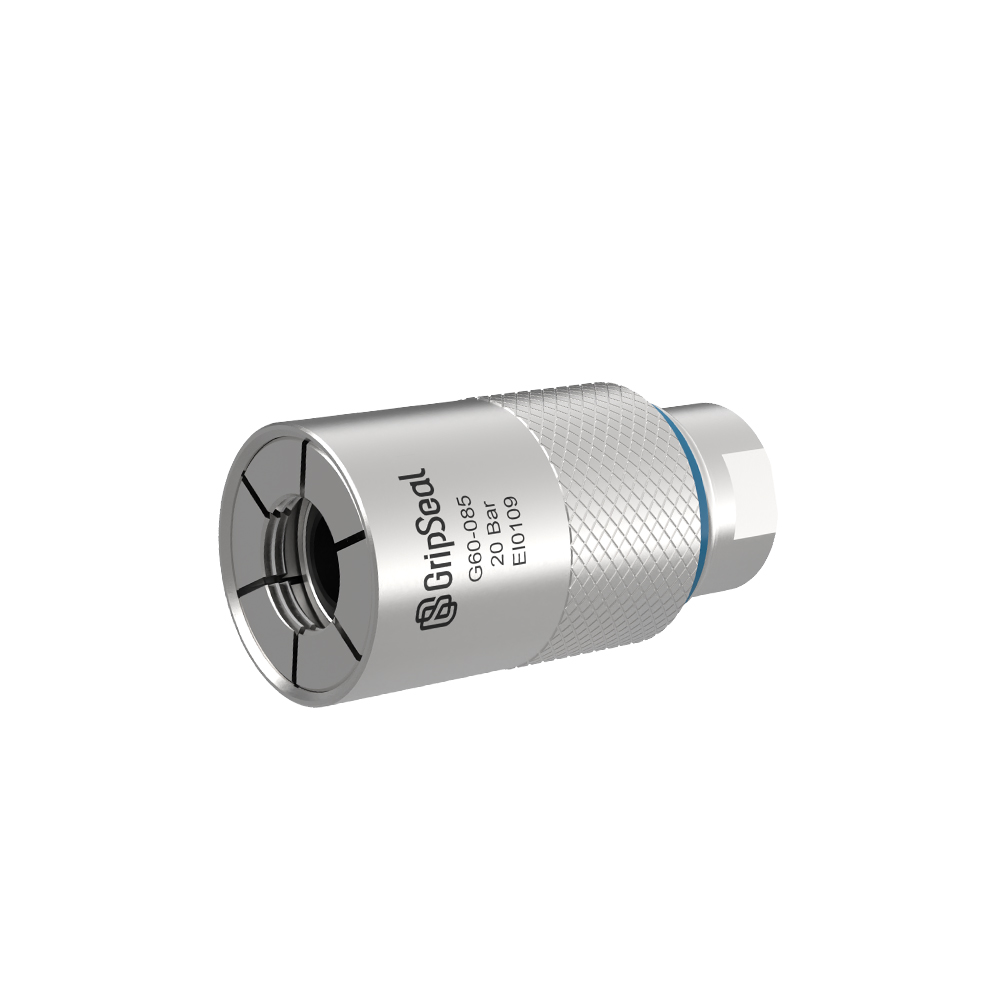
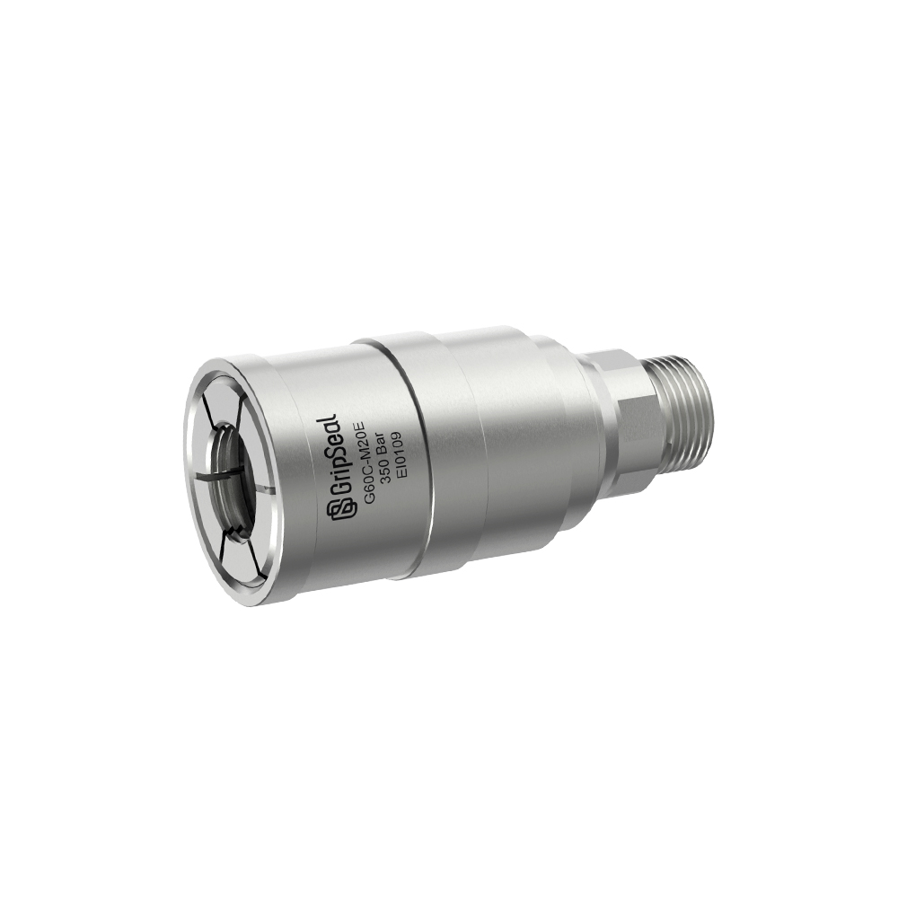
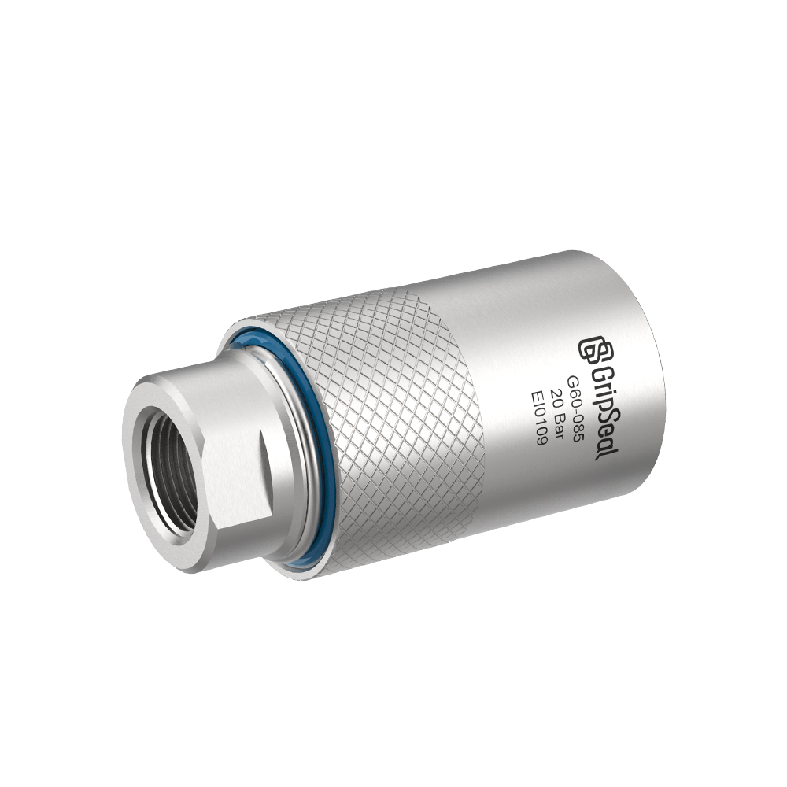
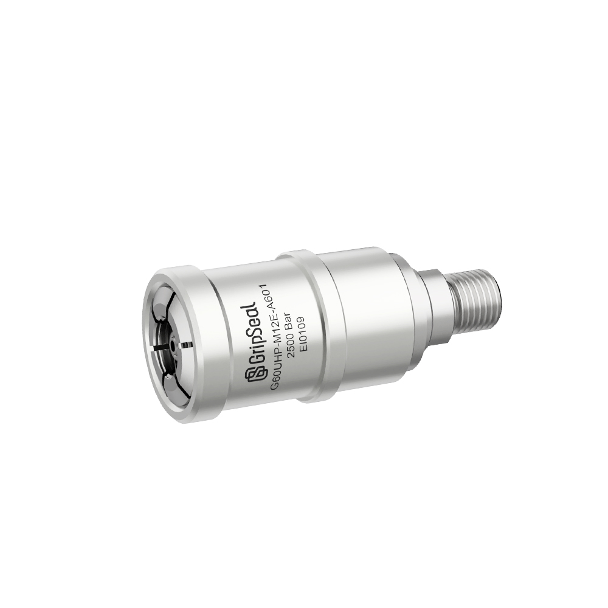

A model detail page for compact external threaded interfaces in instruments, HVAC-R, appliance testing, and routine production validation。



Designed for external threaded interfaces where quick connection, compact handling, and repeatability are more important than slow threaded assembly。
Use this route when the part has an external thread and the project needs a compact connector for routine validation。
产品参数
| 典型压力 | 真空 - 30 bar |
|---|---|
| 密封路线 | 外螺纹接口密封 |
| 螺纹范围 | 按选型表确认 |
| 介质 | 空气 / 氮气 / 水测试 |
| 主体材质 | 铝合金 / 不锈钢 |
| 密封材质 | NBR / FKM / EPDM |
| 温度范围 | -20 C - 120 C |

用于减少外螺纹测试点反复手拧带来的低效率。
适合周边空间有限、需要更紧凑连接方式的场景。
适用于常见检漏、功能测试和压力检查工位。
螺纹规格、可用螺纹长度和密封面细节需结合真实工件确认。
选型表
| 型号 | 螺纹范围 | 压力 | 介质 | 操作方式 | 备注 |
|---|---|---|---|---|---|
| G60-01 | M 螺纹 / G 螺纹按图纸确认 | 真空 - 30 bar | 空气 / 水 | 手动 | For compact external-thread validation |
| G60-02 | M 螺纹 / G 螺纹按图纸确认 | 真空 - 30 bar | Air / Nitrogen | 工装 | For repeated line-side testing |
Application cases and production photos can be reviewed with the project information。
For compact external threaded interfaces on instruments and test components。
For routine pressure, leak, and function checks on HVAC-R related assemblies。
For repeated production validation of appliance or small equipment interfaces。
For stations where a compact external-thread connector improves cycle time。
Compare nearby threaded connector routes before choosing the final series。